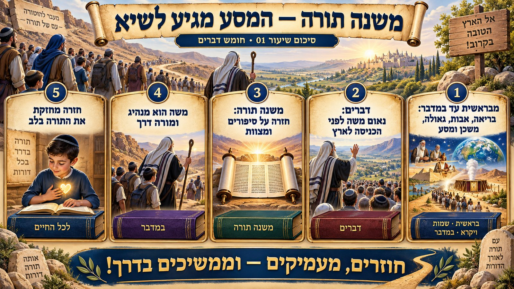

בפתיחת השנה, בחודש אלול, פותחת כיתה ו' את החומש החמישי והאחרון – חומש דברים. זהו הרגע שבו נסגר המעגל שהחל בכיתה א' עם "בראשית ברא אלוהים", ועם סיום החומש הזה יזכו התלמידים למעמד מיוחד: סיום חמישה חומשי תורה.
מהלך השיעור
המורה פתח בסקירה קצרה של המסע: חומש בראשית (כיתה א'-ב') – בריאת העולם וסיפורי האבות; חומש שמות (כיתה ג') – שעבוד מצרים, יציאת מצרים ומתן תורה; חומש ויקרא (כיתה ד') – עבודת המשכן והקורבנות; חומש במדבר (כיתה ה') – המסע במדבר, חטא המרגלים ותחילת הדור החדש. והנה מגיעים התלמידים לחומש דברים.
המורה הסביר את השם הראשון של החומש – "דברים" – הלקוח מהמילה השנייה בפסוק הראשון, "אלה הדברים". הוא שאל את התלמידים שאלה מנחה: "תנו כמה שיותר דברים גדולים שמשה רבנו עשה למען עם ישראל" – וציפה לתשובות כמו יציאת מצרים, קריעת ים סוף, מתן תורה, בניין המשכן, הורדת המן והניצחון על עוג מלך הבשן. אחר כך הפתיע: הדבר הגדול ביותר שעושה משה בחומש הזה הוא "לדבר דברים" – כלומר ללמד, לחנך. משה רבנו הוא לא רק מנהיג שדואג לצרכים הגשמיים של העם, אלא "מורה דרך" שנותן לעם כיוון רוחני ומוסרי לפני הכניסה לארץ.
השם השני – משנה תורה
המורה הציג את השם השני של החומש: "משנה תורה". הוא פירק את המילה "משנה" – לשון שינון וחזרה – והסביר שבחומש דברים משה חוזר על דברים, סיפורים ומצוות שכבר נאמרו בחומשים הקודמים. הוא המשיל זאת ל"לחם משנה" בשבת – שתי חלות, כפל שנועד לתת חיזוק, "תוקף כפול" לדבר.
לבסוף הבהיר המורה הבחנה חשובה: אין להתבלבל בין "משנה תורה" – שמו השני של חומש דברים, לבין ספר ההלכה "משנה תורה" שכתב הרמב"ם אלפי שנים מאוחר יותר. המורה סיפר שעל הרמב"ם אמרו "ממשה עד משה לא קם כמשה" – ושמי שנאלץ לברוח ולקחת עמו רק את הדברים ההכרחיים ביותר, יכול להסתפק בשני ספרים בלבד: התורה וספרו של הרמב"ם, כי בהם מרוכז כל מה שיהודי צריך.
💎 מה חשוב במיוחד ללמד — נקודות להעצמת אמונה ואהבת ה׳
- ההבנה שסיום חמישה חומשי תורה הוא הישג נדיר ומיוחד – יש להעצים בילדים את הגאווה וההתרגשות על כך שהם עומדים להשלים את כל התורה כולה.
- התפקיד האמיתי של מנהיג בעם ישראל אינו רק לדאוג לצרכים גשמיים, אלא ללמד תורה ומוסר – כך גם משה רבנו, וכך צריך כל אדם המשפיע על הסובבים אותו לפעול מתוך אהבה ודאגה לצד הרוחני.
- חזרה ולימוד מחדש (משנה תורה) מלמדים שתורה איננה "חד־פעמית" – יש ערך עצום בשינון ובחיזוק מחודש של דברים שכבר נלמדו, בדיוק כפי שמשה טרח לחזור עליהם לפני הכניסה לארץ.
מסע של שנה שלמה מתחיל כאן: אותו מסע שהחל ב"בראשית ברא" מגיע עכשיו לפרק המסכם והמרגש ביותר שלו.
